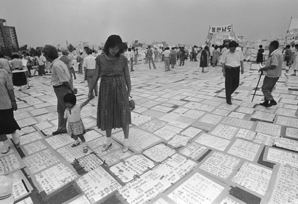

|  |
1983년 뜨거운 해가 내리쬐던 어느 날. 나는 어머니 손을 잡고 여의도에 있는 KBS 방송국 앞에 갔다. 나는 처음에 그저 놀러 가는 줄 알았지만, 그것이 아님을 알기에는 시간이 오래 걸리지 않았다. 어머니께서는 연신 손수건으로 눈물을 훔치시며 ㉠1‧4 후퇴 때 손을 놓쳐 잃어버렸다는 이모님을 애타게 찾으셨다. …(생략)…. |
|---|---|
| 장면 | 내레이션 |